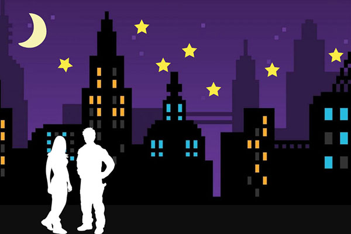

Home Pixels Vector Motion Print Contact

The storyline was for a woman to meet a man in the streets in front of skyscrapers and buildings in a downtown setting. It is nighttime and the moon and stars are out. When the woman and man meet, a hert magically appears in the middle of their bodies, symbolizing love.